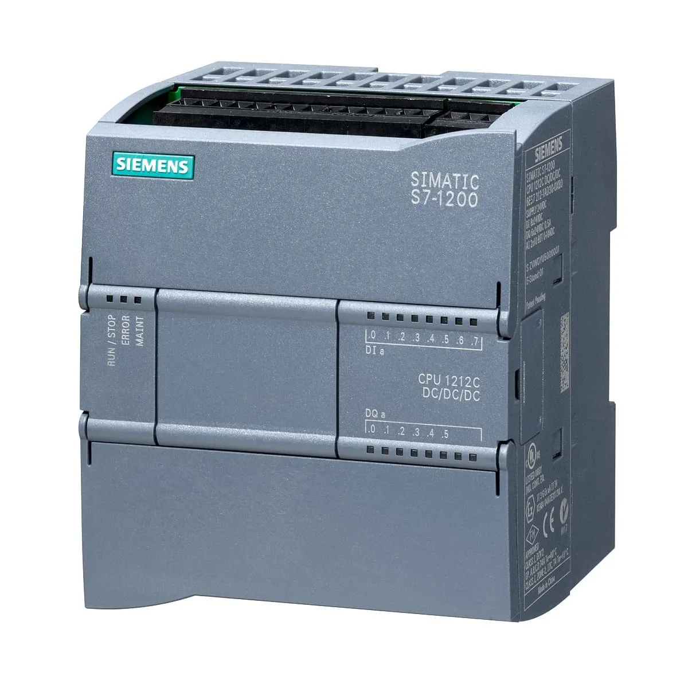
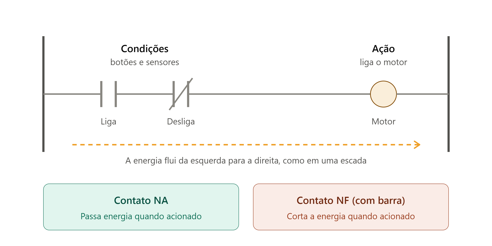
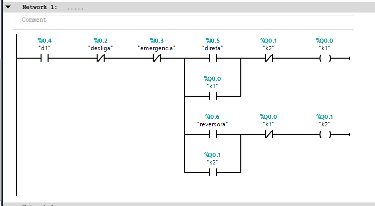
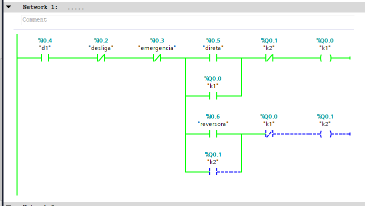

CLP
O cérebro da automação: ele lê os sinais, decide o que fazer e comanda as máquinas.
O que é o CLP

O CLP (Controlador Lógico Programável) é um equipamento eletrônico que automatiza máquinas e processos. Ele recebe sinais de entrada (botões e sensores), processa tudo com base em um programa e aciona as saídas (contatores, lâmpadas, válvulas).
É muito usado na indústria porque é robusto, rápido e fácil de reprogramar sem mexer na fiação.
CLP utilizado: Siemens S7-1200
O modelo é a CPU 1214C DC/DC/DC. Isso quer dizer que a alimentação, as entradas e as saídas são todas em corrente contínua (24 V).
Entradas digitais
14 entradas, onde ficam ligados botões, chaves e sensores.
Saídas digitais
10 saídas, que acionam bobinas de contatores, lâmpadas e outros.
Entradas analógicas
2 entradas para sinais que variam, como de 0 a 10 V.
Porta PROFINET
Faz a comunicação em rede com o computador e outros equipamentos.
Programação
Feita em Ladder, no software TIA Portal da Siemens.
Como o CLP faz a partida reversora
No painel, a partida é feita com contatores e botões ligados direto. Com o CLP, essa lógica passa a ficar dentro de um programa em Ladder, que é uma linguagem desenhada como uma escada: a energia "flui" da esquerda para a direita e, se o caminho estiver livre, a saída é ligada.

Como ler um diagrama Ladder
Os contatos à esquerda são as condições (botões e sensores) e a bobina à direita é a saída, que no nosso caso aciona o contator. O contato NA deixa a energia passar quando é acionado, e o NF corta a energia quando é acionado.
Estes são os endereços usados no programa do projeto:
| Endereço | Nome | Função |
|---|---|---|
| %I0.4 | d1 | Disjuntor, precisa estar ligado |
| %I0.2 | desliga | Desliga o motor |
| %I0.3 | emergencia | Desliga tudo na emergência |
| %I0.5 | direta | Liga o motor no sentido direto |
| %I0.6 | reversora | Liga o motor no sentido contrário |
| %Q0.0 | k1 | Contator do sentido direto |
| %Q0.1 | k2 | Contator do sentido contrário |

Programa em Ladder da partida reversora
Cada sentido tem o seu contato de selo (k1 e k2), que mantém o motor ligado depois de soltar o botão. Além disso, o contato NF de k2 fica na linha de k1 e o NF de k1 na linha de k2. Isso é o intertravamento: os dois contatores nunca ligam juntos.

Intertravamento funcionando na simulação
Aqui o k1 está ligado. Mesmo com o botão reversora acionado, o contato NF de k1 está aberto (linha tracejada azul) e o k2 não liga.
Atenção aos botões físicos: no programa, "desliga" e "emergencia" aparecem como contatos NF. Em um circuito real o certo seria o contrário. Os botões de desligar e de emergência têm contato físico NF, então o CLP recebe sinal o tempo todo e só perde quando o botão é apertado. Por isso, no programa eles ficariam como contatos NA.
Relé térmico: ele não foi colocado no programa. Em um circuito real, o contato dele entraria em série com os outros, como no diagrama feito no CADe_SIMU, para desligar o motor em caso de sobrecarga.
Onde o CLP fica na automação?
Veja a pirâmide da automação e a rede PROFINET
Ver pirâmide →